立上がり時間
RiseTime
概要
立ち上がり時間は、指定した低状態レベルから指定した高状態レベル(または指定した高状態レベルから指定した低状態レベル)に信号が変化するのに必要な時間を参照します。Originの立ち上がり時間パネルツールは、四角形オブジェクトで直感的にグラフの領域を選択し、その領域の上昇または下降の時間を計算できます。
学習する項目
このチュートリアルで以下のことを行います：
- 立上がり時間パネルツールを使用して下降時間を計算する
- 下降時間計算の設定を変更する
- グラフに表示する要素を変更する
- 出力設定を変更し、結果を出力する
ステップ
- 新しいワークブックを用意します。ヘルプ: フォルダを開く: サンプルフォルダを選択して、サンプルフォルダを開きます。このフォルダ内のSignal ProcessingサブフォルダにあるStep Signal with Random Noise.dat ファイルを探します。空のワークシートにファイルをドラッグアンドドロップしてインポートします。
- 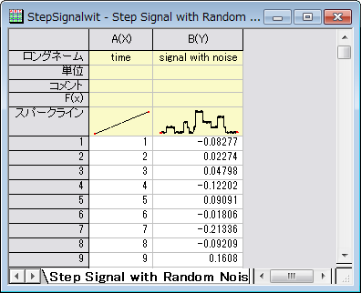
- B列を選択し、メニューから作図：基本の2Dグラフ：折れ線を選択してグラフを作図します。
- 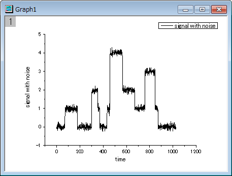
- プロット操作・オブジェクト作成ツールバーの軸スケールの拡大ボタンをクリックして、グラフ内のX範囲が500から700の範囲を選択して拡大します。
- 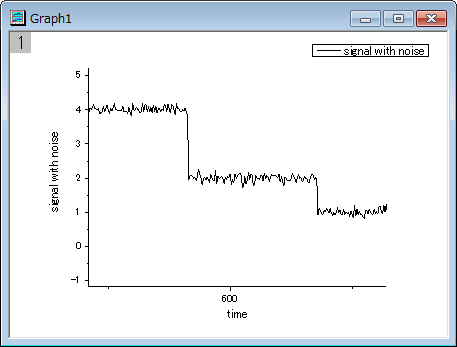
- Originメニューからガジェット：立ち上がり時間ROIツールを選択し、このツールを開始します。
- ダイアログボックスで、ROIボックスタブを開き、Xスケールの開始を510にし、終了を650にします。また、ツールを下降時間にし、方法をヒストグラムに変更します。
- 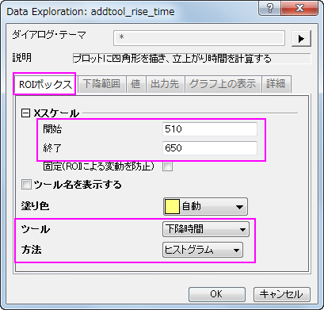
- 下降範囲タブを開き、開始と終了を20と80に変更します。
- 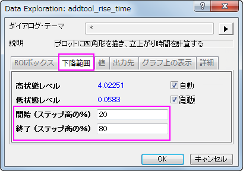
- 値タブでは、データセット名（名前）、下降範囲（dVref）、下降時間（dT）以外のチェックをはずします。
- 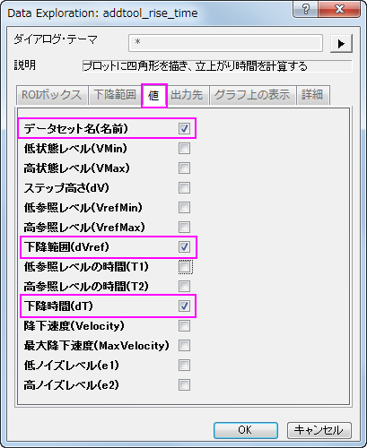
- 次の出力先タブで、スクリプトウィンドウのチェックを外し、ワークシートに追加のチェックを付けます。
- 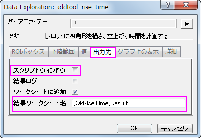
- グラフ上の表示タブを開き、インディケータの項目を開いて、縁の色を青にし、下降範囲のチェックを付けます。下降範囲にチェックを付けます。
- 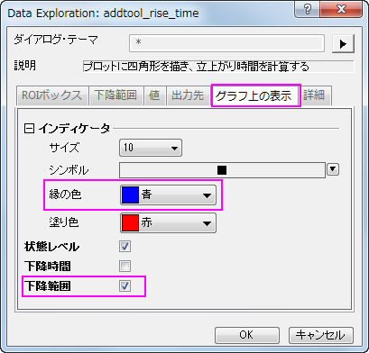
- OKボタンをクリックし、ROIボックスをグラフに配置します。
- 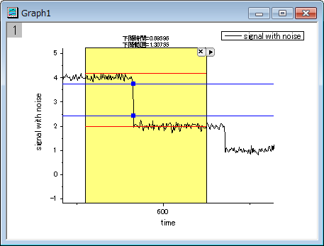
- 上図のように、2つの赤い水平線が高いレベルと低いレベルに表示され、折れ線グラフ上のインディケータの2つの青い線の間が下降範囲です。ROIボックスの上部に下降時間と下降範囲が表示されます。
- 三角形のボタンをクリックして、コンテキストメニューを開き、ROI位置の固定を選択すると、移動できなくなります。
- 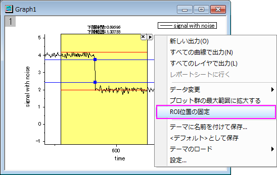
- 再度コンテキストメニューを開き、新しい出力を選択して結果を出力します。再度矢印ボタンをクリックし、メニューからレポートシートに行くを選びます。
- 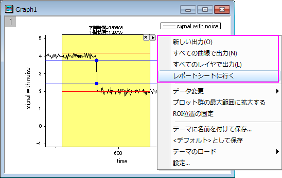
- すると、レポートシートがアクティブになり、値タブで選択した結果を見ることができます。
- 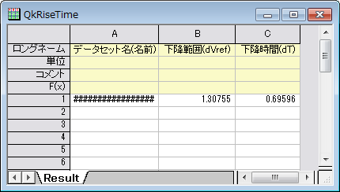